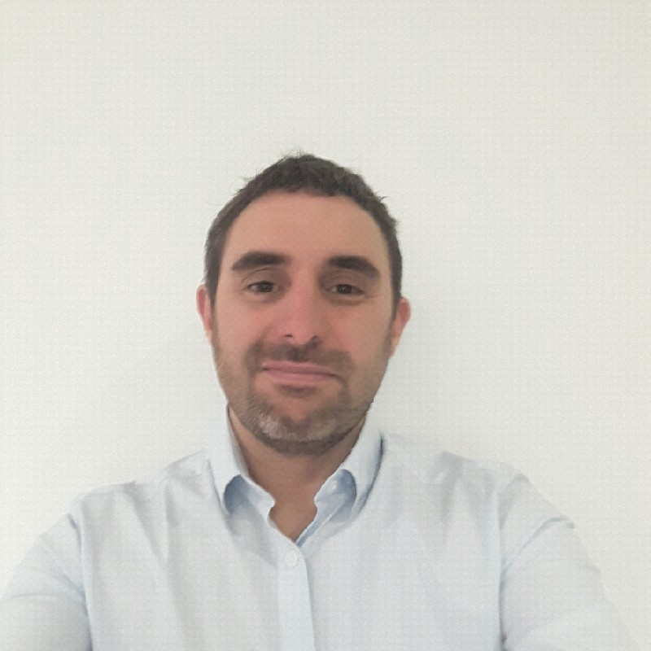

Montauban (82) · Toulouse
Bonjour, je suis
Sylvain Garrigues
Technicien méthodes aéronautique & automatisation des processus
Depuis 2004, j'accompagne la production aéronautique, des programmes Airbus A380, A350 et A320 à Toulouse jusqu'à JVAeroservices à Montauban. Ma particularité : je développe moi-même les outils qui font gagner du temps aux équipes, du classeur VBA à l'application web.

Depuis 2004
dans l'aéronautique, d'Airbus Toulouse à JVAeroservices
A380 · A350 · A320
trois programmes Airbus, dont deux lancements
Dev + IA
Licence concepteur d'applications (2021), développement assisté par IA
Ce que j'apporte
Le terrain de la production et les outils pour l'outiller
Méthodes & industrialisation
Rédaction des gammes de travail, analyse des modifications du bureau d'études et de leur impact en production, suivi des chantiers jusqu'à la livraison.
ERP & données
Nomenclatures, gestion des articles et flux logistiques sous SILOG et SAP. Exploitation des exports pour construire des indicateurs fiables.
Automatisation & développement
Outils Excel/VBA et applications web pour supprimer les tâches répétitives des équipes.
IA appliquée au développement
J'utilise de temps en temps les assistants IA comme Claude pour créer des macros Excel ou de petits programmes d'extraction de données, et gagner du temps sur les tâches répétitives.
Analyse vidéo
Application d'analyse de matchs de foot par vision par ordinateur : détection des joueurs sur la vidéo, statistiques d'équipe et de joueurs, le tout calculé en local.
Drone & cartographie
Planification de vols de drone : grilles de points de passage GPS, calcul de la résolution au sol (GSD) et traitement photogrammétrique.
Portfolio
Projets phares
Contact
Un projet, une question ?
Je réponds par e-mail ou sur LinkedIn. Le code de mes projets est sur GitHub.
Tarn-et-Garonne (82) · Toulouse